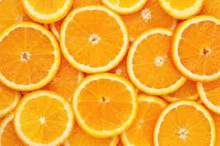

A cor laranja significa alegria, vitalidade,
prosperidade e sucesso. É uma cor quente
resultado da mistura das cores primárias
vermelho e amarelo. Está associada à criatividade,
pois o seu uso desperta a mente e auxilia no
processo de assimilação de novas ideias.
